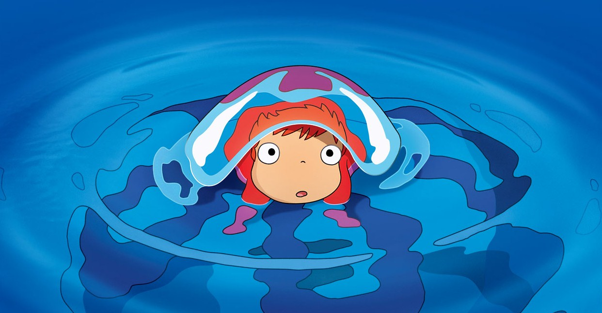
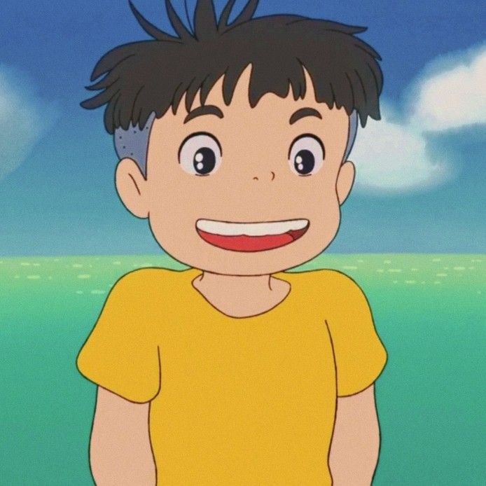
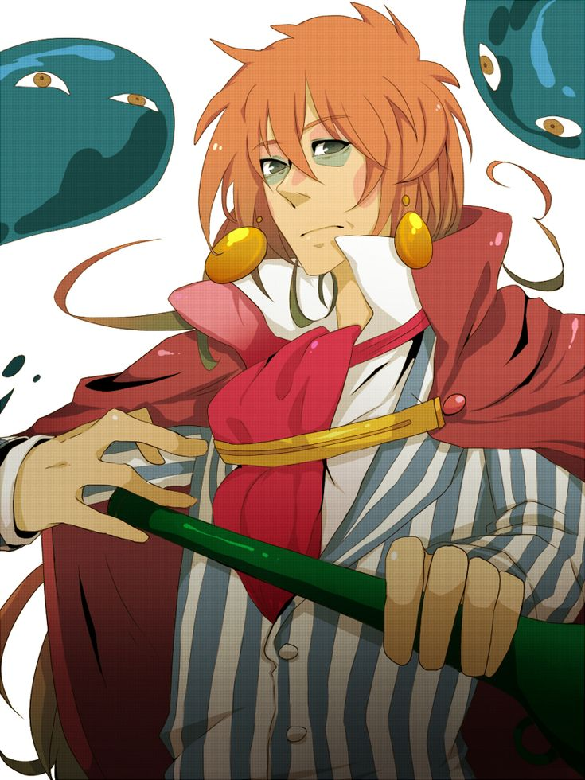
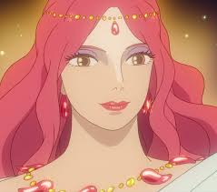
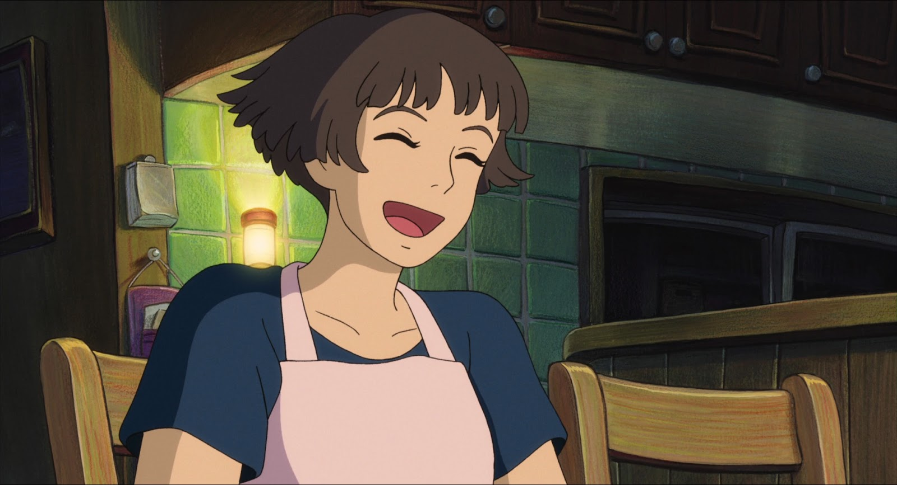

tp03-listas
seguel azul
1.1 ¿Para qué sirve la etiqueta ul? Dar un ejemplo en donde lo utilizarías.
la etiqueta ul sirve para poder crear listas ordenadas. se puede utilizar para ordenar listas de materias
1.2 ¿Para qué sirve la etiqueta ol? Dar un ejemplo en donde lo utilizarías.
la etiqueta ol permite definir listas, se puede utilizar con numeracion o las puede ordenar alfabeticamente
1.3 ¿Para qué sirve la etiqueta dl? Dar un ejemplo en donde lo utilizarías.
sirve para poder crear listas de conceptos o descripciones, se utiliza mas que nada para crear definiciones
1.4 ¿Para qué sirve la etiqueta li? Dar un ejemplo en donde lo utilizarías.
la etiqueta li sirve para declarar cada uno de los elementos de una lista, cada elemento de la lista estara dentro de la etiqueta de apertura li
1.5 Crea una lista desordenada con tres elementos (li) que contengan nombres de países de América del Sur.
- Brasil
- argentina
- colombia
1.6 Crea una lista ordenada con cinco elementos (li) que contengan los días de la semana en orden alfabético.
- lunes
- martes
- miercoles
- jueves
- viernes
1.7 Anida una lista desordenada dentro de otro elemento li de otra lista desordenada para crear una lista anidada de frutas y verduras.
-
frutas
- manzana
- pera
- frutilla
- banana
- cereza
- mandarina
- sandia
-
verduras
- zanahoria
- lechuga
- tomate
- brocoli
- papa
- acelga
- espinaca
1.8 Crea una lista ordenada, respetando las negritas y el subrayado, que contenga los siguientes pasos para hacer una tarta de manzana:
a) Pelar y cortar las manzanas en rodajas finas. b) Mezclar la canela, el azúcar y la harina en un tazón.
c) Colocar la masa de la tarta en un molde para horno. d) Colocar las manzanas sobre la masa de la tarta.
e) Hornear la tarta durante 45 minutos.
- pelar y cortar las manzanas en rodajas finas.
- mezclar la canela,el azucar y la harina en un tazon
- colocar la masa de la tarta en un molde para horno
- colocar las manzanas sobre la mesa de la tarta
- hornear la tarta durante 45 minutos
1.9 Existe un atributo que se aplica a la etiqueta ol para ver la lista en orden descendente en vez de ascendente, ¿cuál es ese atributo?
Utilizar la referencia de atributos de HTML https://developer.mozilla.org/es/docs/Web/HTML/Attributes
el atributo que se aplica a la etiqueta ol es el atributo reversed, eso permite ver la lista en orden descendente en vex de ascendente
1.10 Utilizando el atributo anterior, crear una lista con cuatro elementos que contengan nombres de películas de terror de forma descendente.
- el conjuro
- juego del miedo
- la casa oscura
- historias de miedo para contar en la oscuridad
1.11 Elegir un gusto particular y realizar una lista descriptiva de por lo menos 5 elementos.
El título debe tener un enlace que lleve a un sitio de referencia. Utilizar en las descripciones etiquetas: strong, em, img.
ponyo y el secreto de la sirenita
- ponyo
"ponyo" es la protagonista principal, la cual es una princesa pez la cual quiere volverse un humano para poder explorar la tierra
al conocer a sosuke quiere formar una amistad con el y convertirse en humano lo mas rapido posible

- sosuke
sosuke es un niño el cual solo vive con su madre ya que su padre siempre esta navegando por los mares,
al conocer a la pez de colores forman una linda amistad y la nombracomo "ponyo"

- fujimoto
Fujimoto es el padre de la princesa pez, el no quiere que su hija pez se convierta en humana ya que cree que los humanos solon nacieron
para contaminar el mar por esa razon trata de hacer lo posible para que su hija no forme una amistad con sosuke

- Granmamare
Granmamare es una poderosa y mistica diosa del mar tambien es la madre de ponyo. Granmamare tiene un gran poder sobre el oceano
y todas las criaturas vivas dentro del oceano, ella esta casada con fujimoto pero no tiene el mismo pensamiento que el, ella cree que su hija hija
es libre de poder elegir su destino

- lisa
Lisa es la madre de sosuke, ella cuida sola a su hijo en una casa en la montaña cerca del mar, ella al conocer a "ponyo"
piensa que solo es una niña comun y corriente, la cuida como si fuera su propia hija

enlace de la pelicula